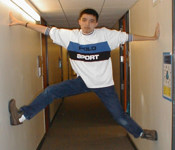
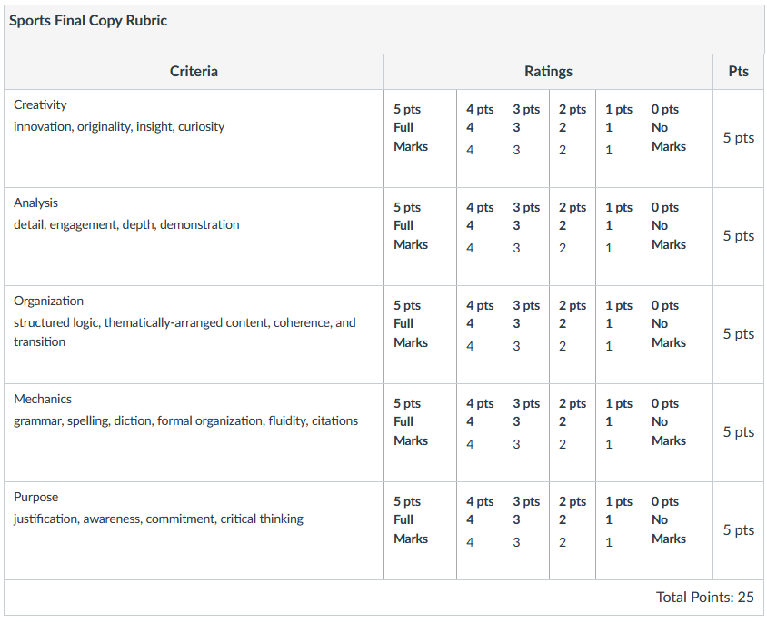
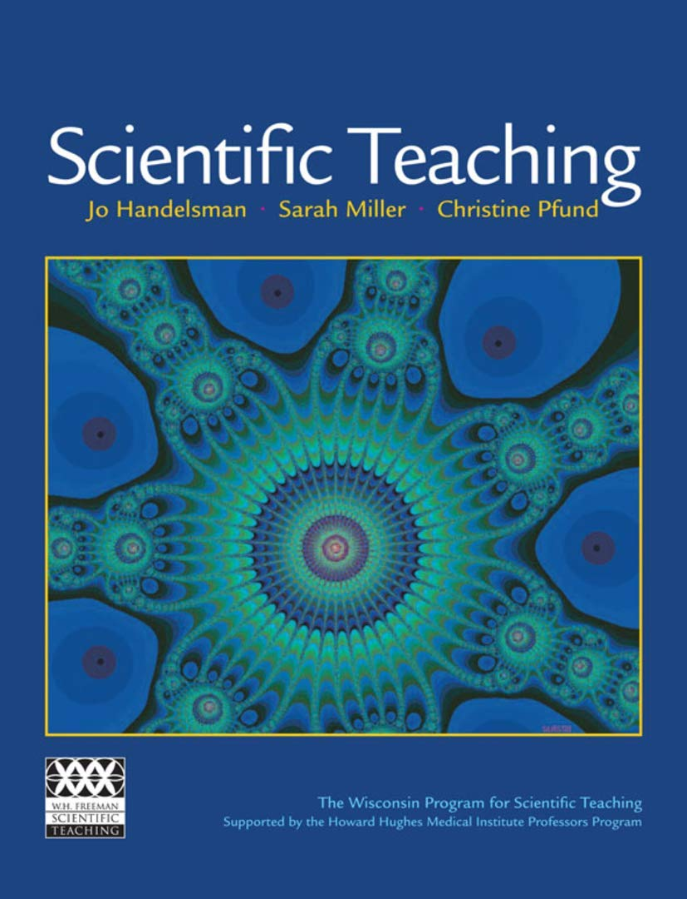

| section | CRN | day | time | room |
|---|---|---|---|---|
| 26 | 38119 | TuTh | 230 PM to 420 PM | GRAN 120 |
| 36 | 38322 | TuTh | 1130 AM to 120 PM | ADMIN 265 |
| 28 | 38533 | TuTh | 430 PM to 620 PM | GRAN 120 |
Spark
Sports Analytics
- Fall 2023
Course Description
This semester seminar will introduce budding analysts to the field of growing field of sports analytics. Instruction will start with baseball sabermetrics, but will evolve to allow students to research, discuss, and become an expert of their favorite professional sport. Activities include participation in fantasy sports, corporate presentations, debates, and computer programming calculations.
Introducting the Presenter
Lecturer: Derek Sollberger
- I go by “Derek” or “teacher”
BA in Applied Mathematics, UC Berkeley
MS in Applied Mathematics, CSULB
MS in Applied Mathematics, UC Merced

Lecturer
- Continuing Lecturer in Applied Mathematics
- 10+ years of teaching at UC Merced
- Courses:
- Bio 18: Data Science
- Bio 175: Biostatistics
- Bio 184: Python for Bioinformatics
- Math 32: Probability and Statistics
- Spark 10: Sports Analytics
Current Research in Pedagogy

- active learning
- computer programming
- flipped classrooms
Identity Statement
- Originally from Los Angeles
- Math: easier to understand through graphs
- Computer Programming: years of experience with R, Python, MATLAB, PHP, HTML, etc.
- Learning: drawn to puzzles and manageable tasks
- Personality: shy, introvert

Assessment
Before Lecture
- 5 percent of semester grade
- review or preview of statistics ideas
- must be completed before class
- may be repeated until correct
- lowest 2 scores dropped
Essays
20 percent of semester grade
most essays will be assigned in segments
- topic proposal
- rough draft
- final version
one-page maximum per essay
lowest 2 scores dropped
Grading Rubric
Essays—the ones deemed ‘final’—will be graded with the following rubric.

Grammar Review
- 5 percent of semester grade
- review of elementary English grammar
- may be repeated until correct
- lowest 2 scores dropped
LearnR Assignments
- 20 percent of semester grade
- This is where the computer programming learning takes place
- Apps are designed to give instant feedback
- lowest score dropped
Collaboration (in-person)
- 25 percent of semester grade
- This is where the data science learning takes place
- students will be present and active in class
- sports groups will work on assigned data-driven tasks
Delivery (in-person)
- 25 percent of semester grade
- sports groups will turn in deliverables
- sports groups will present their findings and progress weekly
Schedule
| Week | Date | Topic | LearnR | Grammar | Proposal | Draft | Final |
|---|---|---|---|---|---|---|---|
| 1 | 2023-10-17 | introduction | — | — | — | — | — |
| 1 | 2023-10-19 | Quarto | 1 | 1 | early research | math background | identity statement |
| 2 | 2023-10-24 | summaries | 2 | 2 | — | — | — |
| 2 | 2023-10-26 | boxplots | 3 | 3 | favorite athlete | early research | math background |
| 3 | 2023-10-31 | barplots | 4 | 4 | — | — | — |
| 3 | 2023-11-02 | scatterplots | 5 | 5 | underrepresented athlete | favorite athlete | industry video |
| 4 | 2023-11-07 | prediction | 6 | 6 | — | — | — |
| 4 | 2023-11-09 | ranking | 7 | 7 | first-year experience | underrepresented athlete | favorite athlete |
| 5 | 2023-11-14 | advanced stats | 8 | 8 | — | — | — |
| 5 | 2023-11-16 | literature review | — | 9 | — | first-year experience | underrepresented athlete |
| — | 2023-11-21 | — | 9 | 10 | — | — | — |
| — | 2023-11-23 | — | — | — | — | — | — |
| 6 | 2023-11-28 | confidence intervals | — | 11 | — | — | — |
| 6 | 2023-11-30 | hypothesis testing | 10 | 12 | — | wrap-up | — |
| 7 | 2023-12-05 | wrap up | — | 13 | — | — | — |
| 7 | 2023-12-07 | — | — | — | — | — | wrap-up |
University Resources
Basic Needs
Basic Needs: Any student who has difficulty affording groceries or accessing sufficient food to eat every day, or who lacks a safe and stable place to live, and believes this may affect their performance in the course, is urged to contact Vice Chancellor and Dean of Students, Dr. Charles Nies (cnies@ucmerced.edu; KL 113).
The Basic Needs Office: Bavneet Kaur, Assistant Director of Basic Needs bkaur23@ucmerced.edu, or call (209) 631-3871
Bobcat Pantry
The Bobcat Pantry (contact Elizabeth Rodriguez Cruz, Basic Needs Food Distribution Coordinator at erodriguezcruz@ucmerced.edu) TC 131; 209-631-3871; Monday and Thursday: 1:30pm - 4:30pm) has free produce, shelf stable, and personal hygiene items available
Food Pantry
UC Merced Food Pantry is a monthly food assistance program for all students, staff, and faculty in need. It offers participants with monthly food allotments (https://studentlife.ucmerced.edu/content/uc-merced-food-pantry).
Health Precautions
Health precautions: Conducting scholarly work under (post-)pandemic conditions simply extend values long established in higher education and respected in UC Merced’s Principles of Community. In enrolling at UCM and in this course, we will observe the following:
- Appreciate and support the physical and psychological nuances of returning to an in-person classroom.
- Keep informed on current campus information and maintain a consistent practice
- If symptomatic, quarantining is expected along with notification to the Covid Response Center https://doyourpart.ucmerced.edu/crc for tracking and support
As a reminder, the above expectations are consistent with our campus’ Code of Student Conduct, which emphasizes that a productive and safe campus involves honesty, fairness, and respect. Circumstances and guidelines may change, and we will discuss important updates to affirm any updates or adjustments to classroom plans. This transition is new for all of us, and we are in this together as a classroom community. If you have questions, you are encouraged to stay in touch with me and/or UCM’s Campus Ready COVID-19 site is an ongoing resource: https://doyourpart.ucmerced.edu/crc
Administrative
Program Learning Outcomes
As aligned with the mission of the General Education Program at UC Merced, this Spark section meets the following PLOs:
- Life at the Research University: Asking Questions
- Reasoning: Thinking Critically
- Communication: Explaining and Persuading
Course Learning Outcomes
- Use descriptive statistics to organize, summarize, and analyze data.
- Obtain substantial amounts of data about sports athletes and franchises
- Argue about the validity and value of sports metrics
- Organize information into engaging narratives
Student Accessibility Services
University of California, Merced is committed to creating learning environments that are accessible to all. If you anticipate or experience physical or academic barriers based on a disability, please feel welcome to contact me privately so we can discuss options. In addition, please contact Student Accessibility Services (SAS) at (209) 228-6996 or access@ucmerced.edu as soon as possible to explore reasonable accommodations. All accommodations must have prior approval from Student Accessibility Services on the basis of appropriate documentation.
If you anticipate or experience barriers due to pregnancy, temporary medical condition, or injury, please feel welcome to contact me so we can discuss options. You are encouraged to contact the Dean of Students for support and resources at (209) 228-3633 or https://studentaffairs.ucmerced.edu/dean-students.
Academic Integrity Policy
Academic integrity is the foundation of an academic community and without it none of the educational or research goals of the university can be achieved. All members of the community are responsible for its academic integrity. Existing policies forbid cheating on examinations, plagiarism and other forms of academic dishonesty. The UC Merced Academic Honesty Policy can be found on the Student Conduct website. Infractions against academic integrity will incur consequences such as an “F” on the assignment/exam and/or a report to the Academic Senate (http://studentconduct.ucmerced.edu)
Learning Environment
Cooperative Classroom
Learning in a cooperative environment should be stimulating, demanding, and fair. Because this approach to learning is different from the competitive classroom structure that many other courses used to be based on, it is important for us to be clear about mutual expectations. Below are my expectations for students in this class. This set of expectations is intended to maximize debate and exchange of ideas in an atmosphere of mutual respect while preserving individual ownership of ideas and written words. If you feel you do not understand or cannot agree to these expectations, you should discuss this with your instructor and classmates.
- Students are expected to work cooperatively with other members of the class and show respect for the ideas and contributions of other people.
- When working as part of a group, students should strive to be good contributors to the group, listen to others, not dominate, and recognize the contributions of others. Students should try to ensure that everyone in the group is welcome to contribute and recognize that everyone contributes in different ways to a group process.
- Students should explore data, make observations, and develop inferences as part of a group. If you use material from published sources, you must provide appropriate attribution.
(Students will be asked to acknowledge this document in an online form.)
This document has been adapted from Scientific Teaching by Jo Handelsman, Sarah Miller, and Christine Pfund

Pep Talk
Learning R can be difficult at first—it is like learning a new language, just like Spanish, French, or Chinese. Hadley Wickham—the chief data scientist at RStudio and the author of some amazing R packages you will be using like ggplot2—made this wise observation:
Wisdom from Hadley Wickham
It’s easy when you start out programming to get really frustrated and think, “Oh it’s me, I’m really stupid,” or, “I’m not made out to program.” But, that is absolutely not the case. Everyone gets frustrated. I still get frustrated occasionally when writing R code. It’s just a natural part of programming. So, it happens to everyone and gets less and less over time. Don’t blame yourself. Just take a break, do something fun, and then come back and try again later.
If you are finding yourself taking way too long hitting your head against a wall and not understanding, take a break, talk to classmates, ask questions … e-mail [Derek], etc. I promise you can do this.
—Andrew Heiss, Georgia State University
Inclusion Statement
I value all students regardless of their background, country of origin, race, religion, ethnicity, gender, sexual orientation, disability status, etc. and am committed to providing a climate of excellence and inclusiveness within all aspects of the course. If there are aspects of your culture or identity that you would like to share with me as they relate to your success in this class, I am happy to meet to discuss. Likewise, if you have any concerns in this area or facing any special issues or challenges, you are encouraged to discuss the matter with me (set up a meeting by e-mail) with an assurance of full confidentiality (only exception being mandatory reporting of academic integrity code violations or sexual harassment).
Session 1
Required
- Sports Preferences (survey)
- Software Installation
- Name Tag
Recommended
- BL0829
- GR1
- LR1